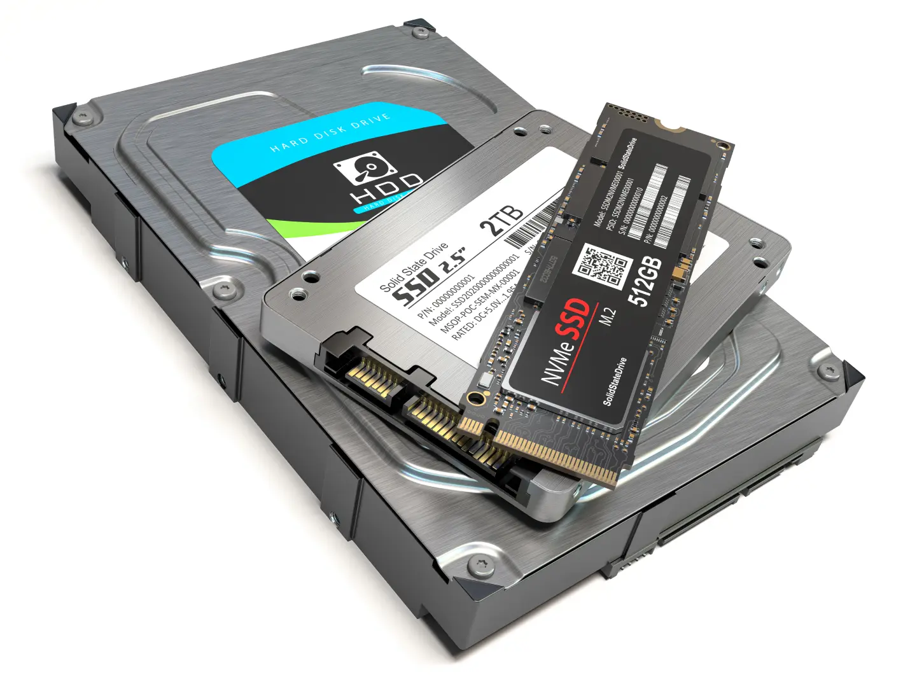

Componentes que Necesitamos
¡Todos los componentes son útiles, incluso si no funcionan completamente pueden servir para prácticas educativas!
Procesadores (CPU)
Cualquier generación, incluso los más antiguos pueden ser útiles para prácticas educativas.
Alta Demanda
Memoria RAM
DDR2, DDR3, DDR4 o cualquier tipo, todas son bienvenidas para actualizar equipos.
Muy Necesario
Placas Madre
Fundamentales para reconstruir equipos completos para estudiantes.
Prioridad

Almacenamiento
Discos duros, SSD, incluso unidades más antiguas son valiosas.
Necesario